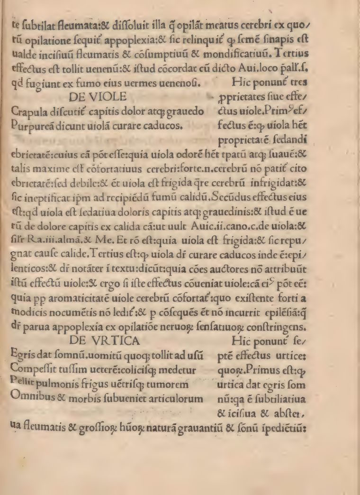

Most of the library is not the Ebers Papyrus. These are the overview treatments for works below the landmark line — complete, but deliberately lean.

The Extemporaneous Dispensatory
- Imprint
- London: printed for W. Innys and R. Manby, 1741
- Format
- 8vo · xii, 214 pp.
- Language
- English, translated from the Latin of the Leiden Libellus (1739)
- Subjects
- prescription-writing · compound medicines · dosage
A working manual of prescription-writing in the Boerhaavian manner: general rules for composing a formula, then the internal and external forms — boluses, draughts, electuaries, juleps, fomentations — each with worked examples and doses. It fixes mid-century compounding practice at the moment chemical preparations were crowding the older Galenicals.
, ’s successor in chemistry at Leiden, wrote for students who could recite the materia medica but not turn it into a defensible prescription. The examples run to familiar simples — myrrh in the stomachic electuaries, betony and rosemary among the cephalics — and the translator keeps the Latin formulas beside their English doses.
Suggested reading



The rhymed dietary of the School of Salerno — sleep, food, air, seasonal bloodletting — in an early Venetian printing with commentary ascribed to .